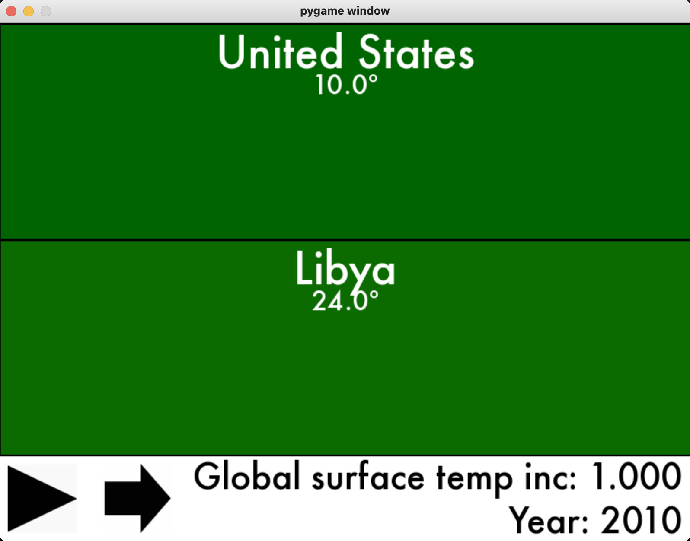

Project 2: Climate Simulator
Due Dates
- Design Checks due Oct. 18th 10pm ET
- Project Code due Oct. 26th 10pm ET
- Handin on Gradescope
Summary
In this project, we’re building a simplified climate simulator for Earth. The Earth is facing grave climate change challenges, and we want to build a program that can look forward and predict the changes that the Earth’s climate might take depending on various factors.
Naturally, the simulation we’re creating is somewhat over-simplified compared to real models. Climate science is complex, and while we’ve designed the project with input from real climate science, we’ve tried to strike a balance between the reality and the program-design skills the course has taught you so far.
In this project, you’ll develop components of a graphical climate change simulator and use it to observe the effects of various possible national emissions policies.
Context
Environmental scientists have determined a near-linear relationship between tonnes of carbon dioxide (CO2) and global surface temperature increases. In other words, the more CO2 we produce, the hotter our globe will be. Based on the most recent work from the Intergovernmental Panel on Climate Change (IPCC), if global temperatures increase 3.0°C from pre-industrial levels, global catastrophes like droughts, peak biodiversity losses, and extreme temperature changes will continue to unravel and exacerbate all across the world. To read more about the adverse impacts of rising global temperature levels, see the report.
By building a graphical simulator, we can see how much various countries contribute to global warming over time. We will also be implementing various policies that will impact how much CO2 a country emits.
The simulator will primarly be based on these two figures from the IPCC:

This first image represents the linear relationship between carbon emitted over time and global surface temperature increases.

This second image demonstrates that the climbing global temperatures will carry disproportionate impacts on local regions across the globe.
Project Components
The climate change simulator you’re developing will have several components:
- The graphical display runs the simulator and presents a graphical portrayal of Earth, as shown in the image above. We’ve provided this for you; you shouldn’t need to do any work to use this.
- The simulator is the engine that simulates the process of time on Earth. It tracks the countries on Earth and their policies, the amount of CO2 in the atmosphere, the current year, and computes global temperatures. You will implement the simulator.
- Country policies are a collection of Python classes that implement a number different possible climate policies that a country might follow. Each of these classes will need to implement methods for the simulator to call in order to determine a country’s emissions. You will implement these policy classes.
Learning goals
From a technical skills perspective, this project will give you experience with:
- Writing and working with code across multiple modules;
- Creating new classes and methods;
- Designing interactions between classes; and
- Using polymorphism to make your simulator extensible (i.e., able to support many different policies, including ones we may not have anticipated in this project document!)
Project tasks
-
In this class, all projects will be in a group format, where you will have one or more partners to collaborate with, depending on the project. For this project, you will have one group partner to work with.
We will announce the partner matchings by Wednesday, October 13th. A TA will email you and your partner to set up a Design Check meeting. Make sure you and your project partner both attend the Design Check! (We need this information for grading purposes.)
- Read through this document in its entirety.
- Setup: Download the project’s stencil code from here.
- Design Check: Complete the Design Check questions due by Oct. 18th at 10pm EST
- Implement and test the simulator and the
Baselinecountry policy. - Implement and test the rest of the country policies listed, and make any necessary changes to the simulator.
- Write tests for your simulator. (This is a great opportunity to practice good testing. For instance, make sure your tests don’t only use one particular policy class—exercise them all.)
When writing code, please follow the testing and style guide.
VSCode setup
In order to edit the project files using VSCode, you should:
- Download the stencil code zip file (which is also linked to above in the Project tasks section). This unzips into a folder called
climate_simulator. Move the zip file to a convenient location, and unzipclimate_simulator.zip - Open the
climate_simulatorfolder (from the zip file) in VSCode - Install the project’s needed Python libraries:
-
Run the following commands in VSCode’s terminal:
pip3 install pytest pip3 install pygame==2.0.0.dev6If
pip3doesn’t work, try usingpipinstead.If you get the following error
fatal error: 'SDL.h' file not found #include "SDL.h", run the below code in your terminal:brew install sdl sdl_image sdl_mixer sdl_ttf portmidi pip3 install pygameIf this still doesn’t work, try updating your pip to the latest version by running
pip install --upgrade pipin terminal.
-
If you are having any trouble with this process, please post on EdStem!
Project Component Details
The project includes several components: the simulator (which you will write), the country policies (which you will write), and the display (which is provided to you).
The display
The display is implemented for you in display.py. It has two buttons: the play/pause button, which starts calling the simulator’s advance_year method 10 times per second until it is paused, and the step button, which calls advance_year once. The rest of the interface displays the countries and temperatures reported by the simulator, as well as the current year.
You can run the display by running python3 main.py in your VSCode terminal. If that doesn’t work, try using python main.py instead. This initializes the display, the simulator, and two policies that have been hardcoded (you will need to change this as part of the assignment!). It should look like the following:

As you’re working with all these different modules, keep in mind the way they depend on each other:
- the
mainmodule creates the simulator and populates it with countries and strategies, then starts up thedisplayon that simulator; - the display invokes the simulator to discover how the world is changing over time; and
- the simulator invokes each country’s policy to discover how that country would react to the current global situation, so that it can simulate the global situation appropriately.
The simulator
The simulator is implemented as a class Simulator in the simulator.py file. The simulator tracks the amount of cumulative carbon emissions (in gigatonnes, or, GtCO2) in the atmosphere and the average temperature of each country. The Display calls the Simulator’s advance_year function to simulate the passing of one year in time. The Display also calls the Simulator’s report function to generate a report of the countries on Earth and their current temperatures.
The add_country method
This method is implemented for you in the stencil code. The add_country method is called by the Main class. It adds a country’s name to the simulator’s country_names list. It also adds to the country_policies dictionary, where the country’s name is the key and the relevant policy is the value. Finally, it adds to the country_temperatures dictionary, where the country’s name is the key and the average_temp of that country is the value.
The advance_year method
In the stencil code, advance_year simulates the passing of one year in time when called. During the year, carbon is both emitted by countries and absorbed by natural processes. As a result of these emissions, the global and regional temperatures change. For this method, you should complete the following:
- Calculate each country’s CO2 emissions from that year. You will need to call the
emitmethod from each country’s policy, passing in any necessary argument(s). (More on the emit method later.) Each country’s yearly emissions should be added to the cumulative CO2 of the atmosphere. - Reduce the amount of CO2 in the atmosphere by 6 gigatonnes of CO2 per year (GtCO2), never going below 2300 cumulative GtCO2 emissions. This represents the GtCO2 in the atmosphere being absorbed by natural processes. (The absorption of 6 GtCO2 represents a rough estimate and not an actual number, but we’ll use it for our simulation.)
- Calculate the global surface temperature increase for that year. The global surface temperature increase can be calculated by examining the total cumulative carbon emission ouput:
- Global surface temperature increase starting value (from 1850 to 2010, see figure 1) = 1
- Updated Global surface temperature increase = 0.0005 ・ cumulative CO2 emissions
- Calculate the updated temperature for each country. Use the equations listed below, where
yindicates how much the temperature should increase from a given country’s baseline temperature (in year 0), andxdenotes the global surface temperature increase:- US: y = 2x
- China: y = x
- Colombia: y = x+1
- Libya: y = 2x
- United Kingdom/ EU: y = 2x
Note: Think about how you can use helper functions to assist the computations you are making in advance_year!
- If you would like to better understand how these equations are informed, or are interested in adding estimates for a different location, these resources should be helpful:
- Estimated rise in regional temperatures based on global temperatures. Most of the equations were estimated from the figure in this link.
- Estimated rise in global temperatures based on cumulative carbon emissions
- Database used for carbon emissions of each country (per The World Bank)
- Database used for average regional temperatures of each country (per The World Bank)
The report method
The report method of the simulator generates a report for the graphical display to use. It is formatted as a list of dictionaries representing data for each country. The list should be in the same order as the simulator’s country_names list. Each dictionary should have two keys:
"name", the country’s name; and"temperature", the country’s current temperature (in degrees C).
In the stencil code, report always returns a fixed list. You should modify the stencil so that it actually reports the current state of the simulation, using the above equations.
Testing
Your advance_year and report methods should have tests in test_simulator.py. You may find it useful to create one or more special policy classes to use for testing; these should also be in test_simulator.py.
The policies
The policies we want you to create are defined as stencil classes in policies.py. An informal description of each policy is:
Baselineemits the same amount of gigatonnes of carbon every year (i.e. the emissions remain constant).Reducingreduces emissions by a constant amount every year (1/2 a gigatonne), starting from year 1. Emissions cannot be reduced below 0.TaxEmissionsrepresents a policy where the government decides to tax corporations for their emissions, such that emissions reduce by 5% every year by what they were the previous year, starting from year 1. In year 0, the emission amount is thebaselineinput into_init_.Deforestationrepresents a policy that decreases the amount of trees in a country. As a result, carbon emissions increase by 3% every year by what they were the previous year, for 50 consecutive years. After the 50th year, the carbon emissions for that country remain constant.MatchLowestmatches the prior-year emissions of the lowest-emitting country in the simulation. Note that this requires access to elements of the simulation’s state. In year 0, the emission amount is thebaselineinput into_init_since there is no history available at the beginning of the simulation.
The stencil code includes an __init__ method for each policy, which takes as an argument baseline, which represents the initial emissions rate.
For each policy, you will need to:
- Initialize the necessary attributes in
__init__; and - Implement the
emitmethod, which is called by the simulator once per year. This method should return the number of emitted gigatonnes of carbon.
Many policies reduce or increase emissions over time, so you will need to track of past emissions as part of some policy objects’ state. Also, think about how you can use principles of polymorphism to make the emit function take in the same arguments, while making sure each policy instance has access to the information it needs to compute the country’s emissions.
Every policy should have tests in test_policies.py.
Design Check
For the design check, you should submit a README.txt file with blocked out comments answering the following questions:
- Suppose United States has adopted the TaxEmissions policy (where emissions are reduced by 5% each year by what they were the previous year). The baseline (year0) CO2 emissions for the U.S. is 6.5Gt and the cumulative CO2 emissions for year0 is 2300Gt. The baseline (year0) temperature for the U.S. is 10.0 degrees Celsius. Round your answers to three decimal places.
- A) Provide the year1 and year2 U.S. C02 emissions
- B) Provide the year1 and year2 cumulative CO2 emissions, provided that other countries in the world have emitted 54Gt in year1 and 62Gt in year2. Take into account the amount of carbon absorbed by the atmosphere (see above).
- C) Provide the year1 and year2 global surface temperature increases from baseline.
- D) Provide the year1 and year2 United States temperatures (see equation above). Note that y in the equation will give you the temperature increase from baseline.
- What states will the simulator need to track? Be specific about the data structures you will use to track each piece of state. For example, how would you keep track of the temperatures for all countries?
- Why does each policy’s
emitmethod need to take in the same arguments? - What arguments should the
emitmethods take (there may be multiple correct answers)? Write at least oneemitmethod/function. - Think about the implementation of the simulator’s
advance_yearmethod, and write some helper functions in pseudocode that can assist with the computations you are making.
README Questions
In addition to late day information, your final README.txt should answer the following questions.
Imagine augmenting your simulator to be a higher-accuracy, more realistic simulation for the actual climate and atmosphere on Earth. Detail the full process you’d take to create a more accurate model and the advantages/disadvantages of your design choices. Feel free to draw inspiration from similar simulations that exist. Consider addressing:
- Collecting data: what kind of data, where you’d source it from, assumptions/allowances you’d make, etc.
- Constructing the simulation: variables to include, testing methods, consultations with experts to check its accuracy, etc.
- Publicizing your work: how you will frame its purpose, the reactions of parties who may be affected, how it could be used in a positive or negative way, etc.
Emphasize the differences between a realistic simulation for Earth and the basic one that you implemented for this project. What ethical considerations must you take into account given the real impact that a widely-used simulation might have?
Testing
Finally, make sure to test your simulator and each of the policies! This is a great opportunity to practice good testing. For instance, make sure your tests don’t only use one particular policy class—exercise them all.
If you would like, you can also add more countries other than the ones we have provided to use for testing. Refer to this spreadsheet for a list of other countries and information needed about them (average temperature, annual/baseline carbon emissions, and an equation for regional temperature change). Post on Ed if you have any questions about this!
Handin
You may submit as many times as you want. Only your latest submission will be graded. This means that if you submit after the deadline, you will be using a late day – so do NOT submit after the deadline unless you plan on using late days.
The README template can be found here.
Please follow the design and clarity guide–part of your grade will be for code style and clarity. After completing the homework, you will submit:
README.txtsimulator.pytest_simulator.pypolicies.pytest_policies.py
Because all we need are the files, you do not need to submit the whole project folder. As long as the file you create has the same name as what needs to be submitted, you’re good to go!
Only one of your partners should submit the project on Gradescope. Make sure to add your partner as a Group Member on your Gradescope submission so that you both can see the submission. Please DO NOT write your partner’s name in the README when listing other collaborators’ cslogins.
If you are using late days, make sure to make a note of that in your README. Remember, you may only use a maximum of 3 late days per assignment, and both you and your partner must have late days to use them. If the assignment is late (and you do NOT have anymore late days) no credit will be given.
Please don’t put your name anywhere in any of the handin files–we grade assignments anonymously!
Hand in your work on Gradescope. Use the Gradescope account associated with your anonymous ID which you set up during HW0. The guide for setting that up and enrolling in gradescope can be found in the Setup guide here.